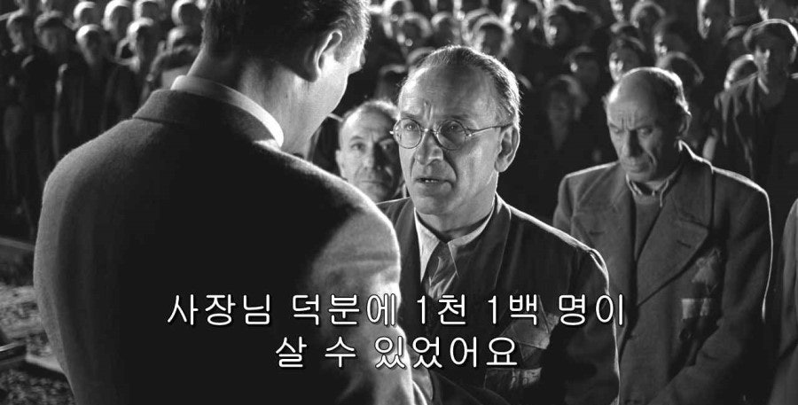

쉰들러 리스트 (1993) Schindler’s List스티븐 스필버그 감독 할리우드 내에서 블록버스터 영화라는 개념을 만든 최초의 인물로 평가된다.
스티븐 스필버그 감독은 유대인이며, 그의 먼 친척 또한 아우슈비츠의 희생자이다.
감독은 감정을 과장하거나 신파적인 연출을 최대한 배제하고,
담담하고 객관적인 시선으로 역사의 현장을 그려낸다. |
|

단순히 영화를 넘어선 역사적 증언이자 인류애에 대한 깊은 성찰을 담고 있는 작품. 홀로코스트를 다룬 작품으로 토머스 캐닐리의 소설 <쉰들러의 방주 Schindler’s Ark>가 원작이다. 제66회 아카데미 시상식 작품상을 수상한 바 있다. 제2차 세계대전, 나치의 홀로코스트라는 인류 역사상 가장 어두운 시기를 배경으로, 독일 사업가 오스카 쉰들러 Oskar Schindler(1908~1978)가 수많은 유대인의 생명을 구원한 실화를 바탕으로 한 영화. 영화 초반, 오스카 쉰들러는 전쟁이라는 혼란 속에서 부를 축적하려는 이기적인 사업가로 그려진다.
유대인 노동력을 값싸게 이용해 공장을 운영하고, 나치 고위 간부들에게 뇌물을 바치며 자신의 이익을 추구하는
전형적인 기회주의자의 모습을 보여준다. 하지만 그는 크라쿠프 게토의 참상, 그리고 유대인 학살 현장을 목격하면서 점차 변화하기 시작한다. |
유럽 전역을 휩쓸었던 경제 위기의 여파로 집안이 몰락한 후 그는 실업자가 되었고, 뒤이어 나치당에 가입했다.
사치를 일삼고 술을 좋아하던 난봉꾼이었던 그에게 나치 독일의 폴란드 침공은 큰 기회를 가져다 주었다. 한밑천 잡기 위해 고향을 떠나 폴란드 남부의 크라쿠프로 간 그는 친위대원들에게 뇌물을 주고 암시장에서 물건을 사고팔아 마련한 돈으로 게토 가까이에 있던 유대인 소유 공장을 인수하는 데 성공했다.
유대인 노예노동은 그에게 일확천금을 보장해주는 효과적 방법이었다.
“좀 더 구해낼 수 있었어” 자신의 공장이 플라주프 강제노역수용소 안에 있었기 때문에 자세히 관찰하게 된 유대인의 현실은 그의 생각을 바꾸어놓았다. 동부 지역의 3대 절멸수용소에서 악명을 떨쳤던 아몬 괴트 Amon Leopold Goth가 플라주프 수용소 소장을 맡은 후 저지른일들을 보면서, 그는 유대인들이 값싼 노동력 제공자일 뿐만 아니라 돌봐야 할 처자와 봉양해야 할 부모가 있는 ‘사람들’ 이라는 사실을 깨닫게 된다. 이때부터 그는 자기 공장 안에 친위대원들이 들어오지 못하도록 막고, 유대인 노동자들에게 식료품을 몰래 반입해주었다. 이 과정에서 많은 뇌물이 필요했음은 물론이다. 그의 배려는 여기서 끝나지 않았다. 노인들의 나이를 서류상으로 20세나 적게 기입하고, 아이들을 성인인 것처럼 처리하며, 변호사와 의사 또는 예술가들을 금속 노동자와 기술자라고 허위 기재하기도 했다. 독일의 군수 경제와 산업에 필요한 인물이라고 강변해야 그들의 목숨을 부지시킬 수 있었기 때문이다. 영상은 글보다 사건의 존재를 확실히 증명하는 영향력을 지니고 있다. 영화는 흑백 화면 속에서 간간이 붉은색을 사용하여 강렬한 인상을 남기는데, 특히 소녀의 붉은 코트는 무자비한 학살 속에서 사라져가는 홀로코스트 희생자의 비극을 극대화하는 미장센이다. 의도적으로 필름마다 수작업으로 그 소녀의 옷에 붉은색을 칠한 것이다. 붉은 코트를 입은 소녀를 연기했던 배우는 2022년 전해진 근황에 따르면 우크라이나와 폴란드 국경지대에서 지내면서 난민을 도우며 살고 있다고 한다. |
세상의 친절함이라고는 하나도 없었을 때, <쉰들러 리스트>는 프랑스에서 교육용 영상으로 활용됐던 <밤과 안개>나 일부 시네필 및 연구자들이 주로 접했던 <쇼아>보다 훨씬 대중적인 문법으로, 주류 할리우드 시스템의 권력을 전폭적으로 이용하며 아우슈비츠의 존재를 세계적으로 알렸다. 흑백 화면, 다큐멘터리 같은 촬영 기법, 그리고 최소한의 음악 사용 등은 영화의 리얼리티를 높이고, 관객들이 역사적 비극에 더욱 몰입하도록 만드는 장치이다. 영화는 대부분 실화에 기반하고 있지만, 실제와 다른 부분도 일부 존재하는데 오스카 쉰들러가 아내를 두고도 불륜을 저지르는 장면 등은 영화적 상상력에 기반한 부분이라고 한다. 토머스 케닐리의 원작 소설에서 홀로코스트를 향한 초연한 시선을 읽고 비로소 영화로 이야기하기로 마음먹었지만 실제 연출을 맡기까지 10년 동안 망설였다. 만드는 내내 스필버그를 감정적으로 소진시켰다. <쉰들러 리스트>는 나치 독일의 참혹한 역사를 보여주는 데 그치지 않고, 왜곡된 신념이 얼마나 위험해질 수 있는지를 우리에게 강하게 일깨워준다. 이 끔찍한 일은 불과 100년도 채 되지 않은 과거의 현실이었다. 현재까지도 우크라이나 러시아 전쟁, 이스라엘 하마스 전쟁에서 민간인들의 학살이 발생하고 있다. 세상은 악(惡)이라는 거대한 광기의 엔진이 작동하는 때가 있다. 한 민족집단 전체를 범죄자로 내몰아 전례 없는 탄압을 가한다. 증오와 차별의 시대에도 우리를 살아가게 하는 힘의 근원은 ‘사람’이며 ‘희망’이다.
|